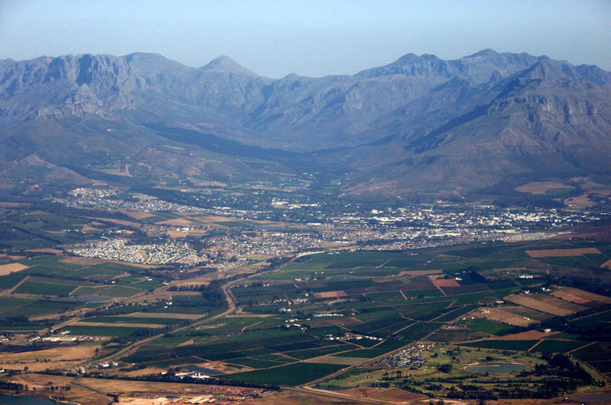

|
Wikipedia:
"Stellenbosch is a town in the Western Cape province of South Africa,
situated about 50 kilometres (31 miles) east of Cape Town, along the
banks of the Eerste River at the foot of the Stellenbosch Mountain. It
is the second oldest European settlement in the province, after Cape
Town. The town became known as the City of Oaks or Eikestad in Afrikaans
and Dutch due to the large number of oak trees that were planted by its
founder, Simon van der Stel, to grace the streets and homesteads."
|

|